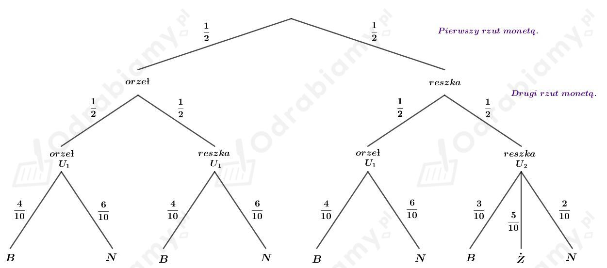
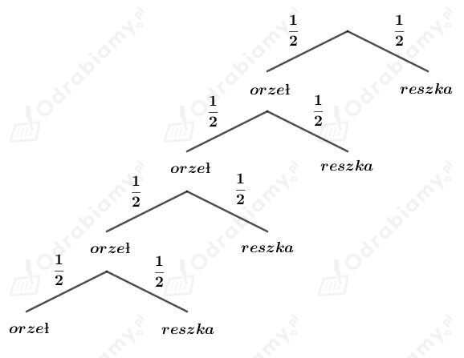

Dane są dwie urny z kulami. W pierwszej znajdują się 4 kule białe i 6 kul niebieskich. W drugiej - 3 kule białe, 5 kul żółtych i 2 kule niebieskie.
Rzucamy dwukrotnie monetą. Jeśli wypadnie co najmniej raz orzeł, to losujemy kulę z pierwszej urny. W przeciwnym razie losujemy kulę z urny drugiej.
Przedstawmy przebieg tego doświadczenia na drzewie:

a)
Wyznaczmy prawdopodobieństwo tego, że wylosujemy kulę białą. Mamy:
b)
Wyznaczmy prawdopodobieństwo tego, że wylosujemy kulę niebieską. Mamy:
Dane są cztery kostki typowe i jedna nietypowa.
Prawdopodobieństwo wylosowania szóstki na typowej kostce wynosi 1/6.
Prawdopodobieństwo wylosowania szóstki na nietypowej kostce wynosi 4/6.
Rzucamy losowo wybraną kostką.
Wyznaczmy prawdopodobieństwo otrzymania sześciu oczek. Mamy:
Odp. Prawdopodobieństwo otrzymania sześciu oczek wynosi 4/15.
Egzamin składa się z dwóch części.
Część I egzaminu składa się z 10 pytań. Student zna odpowiedzi na 8 pytań, więc nie zna odpowiedzi na 2 pytania.
Część II egzaminu składa się z 12 pytań. Student zna odpowiedzi na 10 pytań, więc nie zna odpowiedzi na 2 pytania.
Student na egzaminie losuje po dwa pytania z każdej części.
Wyznaczmy prawdopodobieństwo, że student odpowie na wszystkie pytania poprawnie. Mamy:
Odp. Prawdopodobieństwo, że student odpowie na wszystkie pytania poprawnie wynosi 14/33.
Z treści zadania wiemy, że
a)
Dodatkowo wiemy, że
Korzystając z własności
mamy:
Zatem również wiemy, że
Korzystając ze wzoru na prawdopodobieństwo warunkowe mamy:
Wiedząc, że P(B)=5/8 mamy:
Zauważmy, że
Korzystając ze wzoru na prawdopodobieństwo warunkowe mamy:
b)
Dodatkowo wiemy, że
Korzystając ze wzoru na prawdopodobieństwo warunkowe mamy:
Korzystając z własności:
mamy:
Zatem
Dwukrotnie rzucono kostką.
a)
Musimy obliczyć prawdopodobieństwo tego, że w drugim rzucie wypadła dwójka, jeśli suma otrzymanych oczek wynosi 6. Skorzystamy zatem z prawdopodobieństwa warunkowego.
Niech A oznacza zdarzenie polegające na tym, że w drugim rzucie wypadła dwójka. Zatem:
Niech B oznacza zdarzenie polegające na tym, że suma otrzymanych oczek jest równa 6. Wypiszmy elementy zbioru B. Mamy:
Zatem
Wyznaczmy elementy zbioru A∩B. Mamy:
Zatem:
Korzystając ze wzoru na prawdopodobieństwo warunkowe mamy:
Odp. Prawdopodobieństwo tego, że w drugim rzucie wypadła dwójka, jeśli suma otrzymanych oczek wynosi 6 wynosi 1/5.
b)
Musimy obliczyć prawdopodobieństwo tego, że w drugim rzucie wypadła dwójka, jeśli iloczyn otrzymanych oczek wynosi 6. Skorzystamy zatem z prawdopodobieństwa warunkowego.
Niech A oznacza zdarzenie polegające na tym, że w drugim rzucie wypadła dwójka. Zatem:
Niech C oznacza zdarzenie polegające na tym, że iloczyn otrzymanych oczek jest równy 6. Wypiszmy elementy zbioru C. Mamy:
Wyznaczmy prawdopodobieństwo zdarzenia C. Mamy:
Wyznaczmy elementy zbioru A∩C. Mamy:
Zatem:
Korzystając ze wzoru na prawdopodobieństwo warunkowe mamy:
Odp. Prawdopodobieństwo tego, że w drugim rzucie wypadła dwójka, jeśli iloczyn otrzymanych oczek wynosi 6 wynosi 1/4.
Dziesięciokrotnie rzucamy monetą.
Dziesięciokrotny rzut monetą to schemat Bernoulliego, w którym prawdopodobieństwo sukcesu (wyrzucenie reszki) w pojedynczej próbie wynosi p=1/2, a prawdopodobieństwo porażki (wyrzucenie orła) wynosi q=1/2.
a)
Wyznaczmy prawdopodobieństwo otrzymania jednej reszki. Mamy:
Wyznaczmy prawdopodobieństwo nieotrzymania żadnej reszki. Mamy:
Wyznaczmy prawdopodobieństwo otrzymania co najwyżej jednej reszki:
Odp. Prawdopodobieństwo otrzymania co najwyżej jednej reszki wynosi 11/1024.
b)
Wyznaczmy prawdopodobieństwo otrzymania trzech reszek. Mamy:
Wyznaczmy prawdopodobieństwo otrzymania dwóch reszek. Mamy:
Z przykładu a) wiemy, że prawdopodobieństwo otrzymania jednej reszki wynosi P10(1)=10/1024, a nieotrzymania żadnej - P10(0)=1/1024.
Wyznaczmy prawdopodobieństwo otrzymania co najwyżej trzech reszek:
Odp. Prawdopodobieństwo otrzymania co najwyżej trzech reszek wynosi 11/64.
Dziesięciokrotnie rzucamy kostką.
a)
Musimy obliczyć prawdopodobieństwo tego, że za pierwszym razem wypadła szóstka wiedząc, że wyrzucono dwie szóstki.
Skorzystamy zatem z prawdopodobieństwa warunkowego.
Niech A będzie zdarzeniem polegającym na tym, że za pierwszym razem wyrzucono szóstkę.
Niech B będzie zdarzeniem polegającym na tym, że wyrzucono dwie szóstki. Korzystając ze wzoru Bernoulliego mamy:
Wyznaczmy prawdopodobieństwo zdarzenia A∩B.
Wiemy, że dwa razy wypadła szóstka. Pierwsza szóstka na pierwszym miejscu, więc mamy 1 sposób. Druga szóstka na pozostałych miejscach, więc mamy 9 sposobów. Pozostałych 8 miejsc zajmują oczka od 1 do 5, więc mamy 58 sposobów ich rozmieszczenia. Wszystkich sposobów rozmieszczenia oczek od 1 do 6 na 10 miejsc mamy 610. Zatem:
Korzystając ze wzoru na prawdopodobieństwo warunkowe, wyznaczmy prawdopodobieństwo zdarzenia A. Mamy:
Odp. Prawdopodobieństwo, że za pierwszym razem wypadła szóstka, jeśli wiadomo, że wyrzucono dwie szóstki wynosi 1/5.
b)
Musimy obliczyć prawdopodobieństwo tego, że za pierwszym razem wypadła szóstka wiedząc, że wyrzucono trzy szóstki.
Skorzystamy zatem z prawdopodobieństwa warunkowego.
Niech A będzie zdarzeniem polegającym na tym, że za pierwszym razem wyrzucono szóstkę.
Niech B będzie zdarzeniem polegającym na tym, że wyrzucono trzy szóstki. Korzystając ze wzoru Bernoulliego mamy:
Wyznaczmy prawdopodobieństwo zdarzenia A∩B.
Wiemy, że trzy razy wypadła szóstka. Pierwsza szóstka na pierwszym miejscu, więc mamy 1 sposób. Druga i trzecia szóstka na pozostałych miejscach, więc sposobów mamy:
Pozostałych 7 miejsc zajmują oczka od 1 do 5, więc mamy 57 sposobów ich rozmieszczenia. Wszystkich sposobów rozmieszczenia oczek od 1 do 6 na 10 miejsc mamy 610. Zatem:
Korzystając ze wzoru na prawdopodobieństwo warunkowe, wyznaczmy prawdopodobieństwo zdarzenia A. Mamy:
Odp. Prawdopodobieństwo, że za pierwszym razem wypadła szóstka, jeśli wiadomo, że wyrzucono trzy szóstki wynosi 3/10.
Dwukrotnie rzucamy kostką. Za każdą wyrzuconą piątkę otrzymujemy 10 zł, a za szóstkę - 20 zł. Dla obu wyrzuconych liczb mniejszych od 5 przegrywamy x zł.
Możemy wyrzucić dwie szóstki. Wtedy x1=40 zł oraz p1=1/36.
Możemy wyrzucić dwie piątki. Wtedy x2=20 zł oraz p2=1/36.
Możemy wyrzucić jedną piątkę i jedną szóstkę. Wtedy x3=30 zł oraz p3=2/36.
Możemy wyrzucić szóstkę i liczbę mniejszą od 5. Wtedy x4=20 zł oraz p4=8/36.
Możemy wyrzucić piątkę i liczbę mniejszą od 5. Wtedy x5=10 zł oraz p5=8/36.
W przeciwnym wypadku, x6=-x oraz p6=16/36.
Podana gra ma być sprawiedliwa, czyli EX=0.
Korzystając ze wzoru na wartość oczekiwaną mamy:
Rzucamy monetą do momentu otrzymania czterech orłów z rzędu lub otrzymania pierwszej reszki.
Przebieg tego doświadczenia zilustrujmy na drzewie:

Wyznaczymy wartość oczekiwaną liczby wykonanych rzutów. Mamy:
Odp. Wartość oczekiwana liczby wykonanych rzutów wynosi 1,875.